농산물품질관리사-1차 (2012-05-27 기출문제)
1과목: 관계 법령
1. 농산물품질관리법령상 지리적표시 등록에 관한 설명으로 옳은 것은?
- 인근지역에서 생산된 농산물을 지리적표시를 하고자 하는 지역에서 가공하면 등록할 수 있다.
- 동음이의어 지리적표시의 정의에 합치하는 경우 등록 거절사유가 된다.
- 등록품목의 우수성이 널리 알려져 있지 않아도 생산된 역사가 깊으면 등록할 수 있다.
- 지리적표시 대상지역의 범위는 지리적특성이 동일한 행정구역, 산, 강 및 바다 등에 따라 구획하나, 인삼산업법에 따른 인삼류는 국내로 한다.
(정답률: 80%)

2. 농산물품질관리법령상 시정명령 등의 처분기준에 관한 설명으로 옳지 않은 것은?
- 위반행위가 2 이상인 경우로서 그에 해당하는 각각의 처분기준이 다른 경우에는 그 중 무거운 처분기준에 따른다.
- 생산자단체 구성원이 위반행위를 한 경우 위반자 및 그 소속단체에 대해서도 처분한다.
- 위반행위 횟수에 따른 행정처분은 최초로 적발된 날과 다시 같은 위반행위를 한 날을 기준으로 적용한다.
- 위반행위 내용으로 보아 그 위반 정도가 경미하다면 표시정지의 경우 그 기간을 2분의 1의 범위에서 경감할 수 있다.
(정답률: 알수없음)
3. 우수관리인증농산물의 표지 및 표시사항에 관한 설명으로 옳지 않은 것은?
- 표시도형 글자의 활자체는 고딕체로 표시한다.
- 표시도형의 색상은 녹색을 기본색상으로 하고, 포장재의 색깔 등을 고려하여 파랑색 또는 빨강색으로도 할 수 있다.
- 포장재 크기에 따라 표지의 크기, 형태 및 글자표기를 변형할 수 있다.
- 표시사항은 포장재 측면에 표시하되, 포장재 구조상 측면표시가 어려울 경우에는 표시위치를 변경할 수 있다.
(정답률: 알수없음)
4. 농산물품질관리법령상 유전자변형농산물에 관한 설명으로 옳지 않은 것은?
- 유전자변형농산물을 판매하는 자는 유전자변형농산물 판매 업체임을 표시하여야 한다.
- 표시대상품목은 식품의약품안전청장이 식용으로 적합하다고 인정하여 고시한 품목으로 한다.
- 표시기준 및 표시방법 등에 관하여 필요한 사항은 대통령령으로 정한다.
- 시ㆍ도지사는 유전자변형농산물을 거짓으로 표시하여 처분이 확정된 자의 경우 그 처분과 관련된 사항을 시ㆍ도 홈페이지에 공표하여야 한다.
(정답률: 알수없음)
5. 농산물품질관리법령상 농산물 검사 결과의 이의신청에 관한 설명으로 옳지 않은 것은?
- 검사결과에 이의가 있는 자는 검사현장에서 재검사를 요구할 수 있다.
- 검사원은 재검사 요구를 받은 즉시 재검사를 하고 그 결과를 알려 주어야 한다.
- 재검사 결과에 대해 이의가 있는 자는 재검사일부터 7일 이내에 이의신청을 할 수 있다.
- 재검사 결과에 대해 이의신청을 받은 기관의 장은 그 신청을 받은 날의 익일부터 5일 이내에 다시 검사하여야 한다.
(정답률: 73%)
6. 농산물품질관리법령상 농산물품질관리사의 업무내용이 아닌 것은?
- 농산물의 생산 및 수확 후의 품질관리기술 지도
- 농산물의 선별ㆍ저장 및 포장시설 등의 운용ㆍ관리
- 농산물의 선별ㆍ포장 및 브랜드개발 등 상품성 향상 지도
- 농산물의 판매 및 가격평가
(정답률: 90%)
7. 농산물의 표준규격과 표준규격품의 출하에 관한 설명으로 옳지 않은 것은?
- 표준규격은 포장규격 및 등급규격으로 구분한다.
- 포장규격은 원칙적으로 산업표준화법에 따른 한국산업표준에 따른다.
- 농촌진흥청장 또는 국립농산물품질관리원장은 표준규격을 제정하는 경우에는 이를 고시한다.
- 농림수산식품부장관과 시ㆍ도지사는 농산물을 생산, 출하, 유통 또는 판매하는 자에게 표준규격에 따라 생산, 출하, 유통 또는 판매하도록 권장할 수 있다.
(정답률: 알수없음)
8. 농산물품질관리법령상 3년 이하의 징역 또는 3천만원 이하의 벌금에 해당되지 않는 경우는?
- 지리적표시품이 아닌 농산물의 선전물에 지리적표시품의 표시와 비슷한 표시를 한 경우
- 표준규격품을 내용물과 다르게 거짓으로 표시하여 표시정지 처분을 받고도 그 처분에 따르지 아니한 경우
- 우수관리인증농산물에 우수관리인증농산물이 아닌 농산물을 혼합하여 판매할 목적으로 보관한 경우
- 이력추적관리 농산물이 아닌 농산물에 이력추적관리 농산물의 표시를 한 경우
(정답률: 알수없음)
9. 농산물품질관리법령상 농산물이력추적관리 판매단계 등록사항에 해당되지 않는 것은?
- 판매처 명칭
- 판매처 소재지
- 판매처 전화번호
- 판매처 사업규모
(정답률: 알수없음)
10. 농산물품질관리법령상 용어의 정의에 관한 설명으로 옳지 않은 것은?
- “물류표준화”란 농산물의 운송ㆍ보관 등 물류의 각 단계에서 사용되는 기기ㆍ용기 등을 규격화하여 호환성과 연계성을 원활히 하는 것을 말한다.
- “유전자변형농산물”이란 인공적으로 유전자를 분리 또는 재조합하여 의도한 특성을 갖도록 한 농산물을 말한다.
- “농산물이력추적관리”란 농산물의 안전성 등에 문제가 발생할 경우 해당 농산물을 추적하여 원인을 규명하고 필요한 조치를 할 수 있도록 농산물을 생산단계부터 판매단계까지 각 단계별로 정보를 기록ㆍ관리하는 것을 말한다.
- “유해물질”이란 농약, 중금속, 방사능 등 식품에 잔류하거나 오염되어 사람의 건강에 해를 줄 수 있는 물질로서 대통령령으로 정하는 것을 말한다.
(정답률: 알수없음)
11. 농산물품질관리법령상 농림수산식품부장관이 매년 안전관리계획에서 정한 안전성조사 대상 유해물질을 조정할 수 있는 자로만 옳게 나열된 것은?
- 시ㆍ도지사, 군수
- 국립농산물품질관리원장, 시ㆍ도지사
- 농촌진흥청장, 식품의약품안전청장
- 국립농산물품질관리원장, 군수
(정답률: 알수없음)
12. 농산물품질관리법령상 농림수산식품부장관이 안전성검사기관의 지정을 취소하여야 하는 사유가 아닌 것은? (단, 경감사유는 없음)
- 검사과정에서 시료를 바꾸어 검사하고 검사성적서를 발급한 경우
- 업무의 정지 명령을 위반하여 계속 안전성조사 및 시험분석 업무를 한 경우
- 고의로 의뢰받은 검사시료가 아닌 다른 검사시료의 검사결과를 인용하여 검사성적서를 발급한 경우
- 부정한 방법으로 지정을 받은 경우
(정답률: 알수없음)
13. 농산물품질관리법령상 취소 처분을 하려고 청문을 실시해야 하는 사유가 아닌 것은?
- 농산물우수관리인증기관이 고의 또는 중대한 과실로 우수관리인증 업무를 잘못한 경우
- 농산물우수관리시설을 운영하는 자가 부도로 인해 우수관리인증 업무를 할 수 없는 경우
- 특별한 사유가 없이 지리적표시품의 생산이 곤란한 사유가 발생한 경우
- 다른 사람에게 농산물품질관리사의 자격증을 대여하여 징역 이상의 실형을 선고받은 자의 경우
(정답률: 알수없음)
14. 농산물 검사 또는 검정과 관련한 다음의 부정행위자 중 가장 무거운 처분( ⓐ )과 가장 가벼운 처분( ⓑ )에 해당하는 것은?
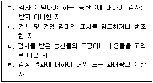
- ⓐ : ㄴ, ⓑ : ㄱ
- ⓐ : ㄴ, ⓑ : ㄹ
- ⓐ : ㄷ, ⓑ : ㄱ
- ⓐ : ㄷ, ⓑ : ㄹ
(정답률: 알수없음)
15. 농산물품질관리법령상 농림수산식품부장관이 위임한 권한으로 옳지 않은 것은?
- 농촌진흥청장 - 농산물우수관리기준에 대한 교육의 실시에 관한 사항
- 국립농산물품질관리원장 - 농산물, 축산물에 잔류하는 유해물질의 실태조사에 관한 사항
- 시ㆍ도지사 - 누에씨ㆍ누에고치의 검사에 관한 사항
- 산림청장 - 임산물의 지리적표시 등록에 관한 사항
(정답률: 알수없음)
16. 농산물품질관리법령상 유전자변형농산물 표시위반과 관련하여 처분을 받은 경우로서 공표명령 대상인 것만을 다음에서 모두 고른 것은?
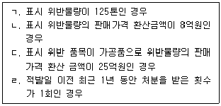
- ㄱ, ㄴ
- ㄱ, ㄷ
- ㄴ, ㄹ
- ㄷ, ㄹ
(정답률: 알수없음)
17. 다음은 주산지의 지정에 관한 내용이다. ( )에 들어갈 내용을 옳게 나열한 것은?
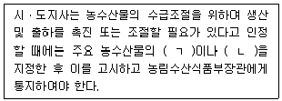
- ㄱ : 생산지역, ㄴ : 생산수면
- ㄱ : 생산능력, ㄴ : 생산품목
- ㄱ : 생산지역, ㄴ : 생산품목
- ㄱ : 생산품목, ㄴ : 생산수면
(정답률: 알수없음)
18. 다음 중 지방도매시장에 해당되는 것은?
- 울산광역시가 농림수산식품부장관의 허가를 받아 개설한 시장
- 대전광역시가 개설한 시장 중 농림수산식품부령이 정하는 시장
- 광주광역시가 농림수산식품부장관의 허가를 받아 개설한 시장
- 중앙도매시장 외의 농수산물도매시장
(정답률: 알수없음)
19. 도매시장법인이 도매시장에 상장된 농수산물의 정가매매 또는 수의매매를 할 수 있는 경우로 옳은 것은?
- 가락동 농수산물도매시장에서 서울특별시장의 허가를 받아 매매참가인외의 자에게 판매하는 경우
- 농림수산식품부장관의 수매에 응하기 위하여 시장도매인이 매수하여 도매 거래하는 경우
- 반입량이 적고 거래 중도매인이 소수인 품목으로서 분쟁조정위원회의 심의를 거친 경우
- 도매시장에서 통관절차를 거쳐 가격이 결정되어 바로 입하된 농산물을 매매하는 경우
(정답률: 10%)
20. 농림수산식품부장관이 농수산물(쌀ㆍ보리 제외)의 비축 또는 출하조절사업을 위탁할 수 있는 대상으로 옳지 않은 것은?
- 농업협동조합중앙회
- 수산업협동조합중앙회
- 한국농어촌공사
- 한국농수산식품유통공사
(정답률: 알수없음)
21. 산지유통인에 관한 설명으로 옳지 않은 것은?
- 부류별로 도매시장 개설자에게 등록하여야 하나, 그렇지 않은 경우도 있다.
- 등록된 도매시장에서 농수산물의 판매ㆍ매수 또는 중개업무를 할 수 있다.
- 도매시장 개설자가 산지유통인 등록 신청을 받았을 때에는 정당한 사유 없이 이를 거부하여서는 아니 된다.
- 국가는 산지유통인의 공정한 거래를 촉진하기 위하여 필요한 지원을 할 수 있다.
(정답률: 알수없음)
22. 농수산물도매시장 개설 등에 관한 설명으로 옳지 않은 것은?
- 중앙도매시장의 경우에는 특별시ㆍ광역시 또는 특별자치도가 개설한다.
- 제주특별자치도가 지방도매시장을 개설하려면 미리 업무규정과 운영관리계획서를 작성하여야 한다.
- 도매시장의 명칭에는 그 도매시장을 개설한 지방자치단체의 명칭과 부류별ㆍ품목별 명칭이 포함되어야 한다.
- 민영도매시장의 시장도매인은 민영도매시장의 개설자가 지정한다.
(정답률: 60%)
23. 농수산물 유통 및 가격안정에 관한 법령상 예시가격을 결정할 때 고려하여야 할 내용을 다음에서 모두 고른 것은?
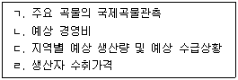
- ㄱ, ㄴ, ㄷ
- ㄱ, ㄴ, ㄹ
- ㄱ, ㄷ, ㄹ
- ㄴ, ㄷ, ㄹ
(정답률: 알수없음)
24. 농수산물 유통 및 가격안정에 관한 법령상 포전매매에 관한 설명으로 옳지 않은 것은?
- 생산자가 수확하기 이전의 경작상태에서 면적단위 또는 수량단위로 매매하는 것을 말한다.
- 포전매매의 계약은 서면에 의한 방식으로 하여야 한다.
- 포전매매의 계약은 특약이 없으면 매수인이 그 농산물을 7일 이내에 반출하지 아니한 경우에는 계약이 해지된 것으로 본다.
- 농업협동조합과 그 중앙회는 포전매매에서의 표준계약서 양식을 정하여 이를 계약서의 작성기준으로 이용할 것을 권장할 수 있다.
(정답률: 알수없음)
25. 도매시장의 개설자가 시장도매인이 농수산물을 위탁받아 도매하는 것을 제한 또는 금지할 수 있는 경우가 아닌 것은?
- 대금결제능력을 상실하여 출하자에게 피해를 입힐 우려가 있는 경우
- 도매시장에서 농수산물을 매수하여 도매거래하거나 매매를 중개하는 경우
- 표준정산서에 거래량ㆍ거래방법을 허위기재하는 등 불공정행위를 한 경우
- 개설자가 도매시장의 거래질서유지를 위하여 필요하다고 인정하는 경우
(정답률: 알수없음)
2과목: 원예작물학
26. 오이재배시 암꽃발생을 촉진시키는 주된 이유는?
- 병발생 억제
- 줄기 신장
- 착과 증대
- 수광률 증대
(정답률: 알수없음)
27. 근채류에서 직근류가 아닌 것은?
- 무
- 우엉
- 당근
- 고구마
(정답률: 알수없음)
28. 다음 중 종자춘화형에 속하는 채소만을 고른 것은?
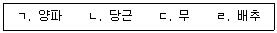
- ㄱ, ㄴ
- ㄱ, ㄹ
- ㄴ, ㄷ
- ㄷ, ㄹ
(정답률: 70%)
29. 채소의 종류와 주요 기능성물질의 연결이 옳지 않은 것은?
- 고추 – 캡사이신
- 토마토 – 라이코펜
- 오이 – 엘라테린
- 마늘 - 액티니딘
(정답률: 알수없음)
30. 다음 설명에 해당되는 병은?
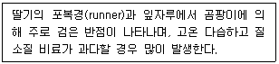
- 모자이크병
- 탄저병
- 모잘록병
- 흰가루병
(정답률: 알수없음)
31. 시설원예에서 병해충 발생 억제방법이 아닌 것은?
- 토양 증기소독
- 건전묘 사용
- 페로몬트랩 설치
- 연작
(정답률: 알수없음)
32. 채소류의 육묘에서 도장(웃자람) 억제방법은?
- 차광률을 높인다.
- 지베렐린을 처리한다.
- 진동으로 자극을 준다.
- 질소 시비량을 늘린다.
(정답률: 46%)
33. 채소에서 접목육묘의 목적이 아닌 것은?
- 흡비력 증진
- 묘 생산비 절감
- 토양전염병 발생억제
- 불량환경 내성증대
(정답률: 알수없음)
34. 굴절당도계로 측정했을 때 당도가 가장 높은 원예작물은?
- 마늘
- 토마토
- 양파
- 딸기
(정답률: 알수없음)
35. 화훼의 종류와 주된 번식기관의 연결이 옳지 않은 것은?
- 글라디올러스 – 목자
- 다알리아 – 괴근
- 아마릴리스 – 인편
- 시클라멘 - 주아
(정답률: 알수없음)
36. 절화 보존제로 사용하는 물질이 아닌 것은?
- sucrose
- 8-HQS
- AOA
- ethylene
(정답률: 알수없음)
37. 장미 양액재배에서 아칭(arching) 재배법에 관한 설명으로 옳지 않은 것은?
- 절화품질을 향상시킨다.
- 삽목묘 이용이 가능하다.
- 재배베드 간격을 줄일 수 있다.
- 광합성 효율을 증진시킬 수 있다.
(정답률: 알수없음)
38. 음생식물이 아닌 것은?
- 고무나무
- 페튜니아
- 드라세나
- 디펜바키아
(정답률: 알수없음)
39. 절화재배에서 적심에 관한 설명으로 옳지 않은 것은?
- 수량증대를 위하여 실시한다.
- 곁봉오리를 조기에 제거한다.
- 개화시기나 초장조절을 목적으로 실시한다.
- 정아우세성이 강한 식물의 세력을 조절한다.
(정답률: 67%)
40. 가을에 국화의 개화시기를 늦추기 위한 억제재배법은?
- 전조재배
- 암막재배
- 네트재배
- 촉성재배
(정답률: 알수없음)
41. 다음 설명에 해당되는 해충은?
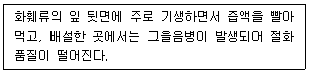
- 온실가루이
- 담배거세미나방
- 도둑나방
- 총채벌레
(정답률: 알수없음)
42. 점적관수에 관한 설명으로 옳지 않은 것은?
- 관수를 자동화할 수 있다.
- 관수와 시비를 동시에 할 수 있다.
- 토양유실이 많은 관수방법이다.
- 물 절약형 관수방법이다.
(정답률: 알수없음)
43. 화탁(꽃받기)의 일부가 과육으로 발달한 위과(僞果)는?
- 배, 복숭아
- 사과, 배
- 복숭아, 포도
- 포도, 사과
(정답률: 알수없음)
44. 과실의 발육과정에서 수정 후 배(胚)가 퇴화되어 종자가 형성되지 않는 것은?
- 타동적 단위결과
- 위단위결과
- 자동적 단위결과
- 영양적 단위결과
(정답률: 알수없음)
45. 과수의 하기전정(夏期剪定) 효과가 아닌 것은?
- 과실의 착색을 억제한다.
- 꽃눈의 분화를 촉진한다.
- 과실의 비대를 촉진한다.
- 수체의 투광 및 통기성을 향상시킨다.
(정답률: 알수없음)
46. 다음과 같은 이중S자생장곡선을 갖는 과실은?
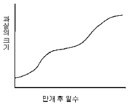
- 포도, 복숭아
- 배, 참다래
- 참다래, 사과
- 사과, 포도
(정답률: 알수없음)
47. 과수원 토양의 초생관리법에 대한 설명으로 옳은 것은?
- 토양의 침식을 방지한다.
- 토양의 입단화를 억제한다.
- 약제살포 등의 작업이 편리하다.
- 토양 중의 미생물 밀도가 감소한다.
(정답률: 알수없음)
48. 국내에서 육성된 품종이 아닌 것은?
- 홍로(사과)
- 원황(배)
- 육보(딸기)
- 백마(국화)
(정답률: 알수없음)
49. 장미과에 속하는 원예작물만을 고른 것은?
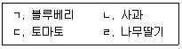
- ㄱ, ㄷ
- ㄱ, ㄹ
- ㄴ, ㄷ
- ㄴ, ㄹ
(정답률: 알수없음)
50. 포도 착색에 관여하는 주요 생장조절물질은?
- 옥신
- 지베렐린
- 아브시스산
- 사이토카이닌
(정답률: 알수없음)
3과목: 수확 후 품질관리론
51. 포장용 필름제작에 사용되는 첨가물로부터 발생되는 발암물질은?
- 알리신
- 스핑고신
- 다이옥신
- 캡사이신
(정답률: 알수없음)
52. 농산물의 품질을 구성하는 요소가 아닌 것은?
- 영양가치
- 안전성
- 경제성
- 풍미
(정답률: 알수없음)
53. MA저장시 발생할 수 있는 장해가 아닌 것은?
- 과피의 갈변
- 조직의 수침
- 이취발생
- 칼슘함량의 감소
(정답률: 알수없음)
54. 성숙도에 대한 설명 중 옳은 것은?
- 고추와 오이는 생리적으로 성숙해야 이용이 가능하다.
- 엽근채류는 대개 원예적으로 성숙하면 수확한다.
- 성숙도를 판단하는데 크기와 모양은 고려하지 않는다.
- 만개 후 일수는 해마다 기상이 다르기 때문에 성숙도와는 관련이 없다.
(정답률: 알수없음)
55. 다음 중 품질을 결정짓는 요소별 인자와 단위를 옳게 짝지은 것은?
- 농약잔류량 – Lbf
- 경도 – ppm
- 산도 – Newton(N)
- 당도 - %
(정답률: 알수없음)
56. 다음 원예산물 중 호흡급등형이 아닌 것은?
- 토마토
- 바나나
- 참다래
- 딸기
(정답률: 알수없음)
57. 신선편이 농산물의 살균소독용 세척수가 아닌 것은?
- 증류수
- 오존수
- 전해수
- 염소수
(정답률: 알수없음)
58. 원예산물의 저장중 발생하는 저온장해에 관한 설명으로 옳지 않은 것은?
- 호온성의 박과채소와 가지과채소에서 자주 발생한다.
- 저온저장중에는 나타나지 않다가 상온으로 옮긴 후 발생하기도 한다.
- 빙결점 이하의 온도에서 발생하고 조직이 물러지거나 표피색깔이 변하기도 한다.
- 저온에 민감한 작물은 예냉온도가 낮을 경우 발생할 수 있다.
(정답률: 알수없음)
59. 다음 원예작물의 수확 후 조직변화로 옳지 않은 것은?
- 무 - 리그닌 함량 증가
- 고구마 - 바깥쪽 유조직의 코르크화
- 파프리카 - 수용성펙틴 증가
- 토마토 - 셀룰로오스 함량 증가
(정답률: 알수없음)
60. 신선편이 가공공장의 오염도 관리에 관한 설명으로 옳지 않은 것은?
- 낙하균의 종류와 수를 측정하여 작업장의 오염도를 측정한다.
- Class 100은 부유균이 100개 이하인 상태를 말한다.
- 청결구역은 준청결구역보다 압력을 높여 공기의 유입을 방지한다.
- 제품의 내포장실은 청결구역으로 관리한다.
(정답률: 알수없음)
61. 원예작물의 수확 후 선별에 관한 설명으로 옳지 않은 것은?
- 수출할 경우 국립농산물품질관리원의 농산물표준규격에 따라야 한다.
- X-ray를 이용하는 광학선별기는 내부결함을 판별할 수 있다.
- 원통형 스크린 선별기는 감귤의 크기 선별에 유용하다.
- 품질의 등급화와 균일화를 이룰 수 있어 원예산물의 상품화에 기여한다.
(정답률: 알수없음)
62. 다음 원예작물의 수확시기 결정을 위한 지표로 옳지 않은 것은?
- 양파 - 지상부 도복정도
- 배추 – 결구정도
- 감자 – 이층형성정도
- 고추 - 개화 후 일수
(정답률: 알수없음)
63. 녹색상태의 미숙바나나가 성숙되는 동안 단맛의 변화와 관련이 가장 높은 것은?
- 전분감소, sucrose증가
- 펙틴감소, fructan증가
- 전분증가, fructan감소
- 펙틴증가, sucrose감소
(정답률: 알수없음)
64. 예냉시 반감기에 관한 설명으로 옳지 않은 것은?
- 반감기가 짧을수록 예냉 속도가 빠르다.
- 반감기 개념으로 볼 때 예냉이 진행될수록 온도 저하 폭이 커진다.
- 7℃ 물로 25℃ 원예산물을 9℃까지 예냉하고자 할 때 17℃가 될 때까지의 시간이다.
- 냉각매체의 온도가 낮을수록 반감기가 짧아진다.
(정답률: 60%)
65. 저온장해 방지를 위해 저장고의 온도를 가장 높게 설정해야 하는 원예산물은?
- 당근
- 토마토
- 배추
- 아스파라거스
(정답률: 30%)
66. 저장중인 원예산물의 증산작용을 억제하는 방법이 아닌 것은?
- 저장고 내에 생석회를 비치한다.
- 저장고 내 상대습도를 높인다.
- 저장고 내 온도를 낮춘다.
- 저장고 송풍기의 풍속을 낮춘다.
(정답률: 알수없음)
67. 유전자변형농산물(GMO)인 Bt 옥수수 품종의 특징은?
- 제초제에 저항성이 있다.
- 해충에 저항성이 있다.
- 저온에 저항성이 있다.
- 바이러스에 저항성이 있다.
(정답률: 알수없음)
68. 저장고 내에 발생된 에틸렌을 제거하는 방법만을 고른 것은?
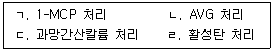
- ㄱ, ㄴ
- ㄱ, ㄹ
- ㄴ, ㄷ
- ㄷ, ㄹ
(정답률: 알수없음)
69. 과실 수확 방법으로 옳지 않은 것은?
- 단감은 꼭지를 짧게 잘라 수확한다.
- 수확 전 낙과가 심한 사과는 일시에 수확한다.
- 양조용 포도는 가능한 한 완숙시켜 수확한다.
- 복숭아는 1일 이상 비가 온 후에는 2∼3일 경과한 다음에 수확한다.
(정답률: 알수없음)
70. 근적외선의 반사 분광을 이용한 비파괴 선별법으로 평가할 수 있는 품질 인자는?
- 무게
- 경도
- 색도
- 당도
(정답률: 알수없음)
71. 다음 원예산물의 수확 후 관리방법으로 옳은 것은?
- 신고배는 저장중 탈피를 막기 위해 변온 관리를 한다.
- 후지사과는 밀증상 방지를 위해 수확 시기를 늦춘다.
- 생강은 부패억제를 위해 큐어링처리를 한다.
- 양파는 건조 방지를 위해 상대습도 90% 이상에서 저장한다.
(정답률: 70%)
72. 원예산물 저온저장고의 냉장용량 결정시 고려할 사항이 아닌 것은?
- 냉매 교체주기
- 저장고 단열정도
- 원예산물 품온
- 저장할 품목
(정답률: 알수없음)
73. CA저장시 사과의 내부갈변의 주요 원인은?
- 일시적인 고온 노출
- 칼슘 부족
- 고농도 이산화탄소
- 높은 상대습도
(정답률: 알수없음)
74. 다음 설명 중 옳은 것은?
- 프로필렌이나 아세틸렌 처리로 과실의 호흡이 증가될 수 있다.
- 원예산물에서 호흡급등과 에틸렌 증가시점은 일치한다.
- 식물호르몬인 ABA는 에틸렌과 상호작용을 하지 않는다.
- ACC합성효소는 에틸렌합성과 관련이 없다.
(정답률: 알수없음)
75. 시중에 판매되고 있는 락스(유효염소 4% 포함)를 사용하여 유효염소 100 ppm 의 세척수 200 L를 만들고자 할 때 필요한 락스의 양(L)은?
- 0.4
- 0.5
- 0.8
- 1.6
(정답률: 알수없음)
4과목: 농산물유통론
76. 농산물의 유통 과정에서 발생할 수 있는 물적 위험에 해당하는 것은?
- 경제여건 변화에 의한 시장축소
- 시장가격 하락에 의한 농산물의 가치하락
- 자연재해에 의한 농산물의 파손
- 소비자 기호 변화에 의한 수요 감소
(정답률: 73%)
77. 소비자들에게는 쇼핑시간을 절약해 주고, 소매업자에게는 점포비용 절감의 이점을 주는 소매 업태는?
- 하이퍼마켓
- TV홈쇼핑
- 할인점
- 백화점
(정답률: 알수없음)
78. 농산물의 생산환경 변화에 관한 설명으로 옳지 않은 것은?
- 산지직거래나 계약재배를 통한 맞춤생산 증가
- 농산물의 표준규격화 및 브랜드화 증가
- 생산 전문화를 통한 농가의 위험부담 경감
- 농산물 생산의 단지화
(정답률: 알수없음)
79. A점에서 수요와 공급의 가격탄력성에 관한 설명으로 옳은 것은?
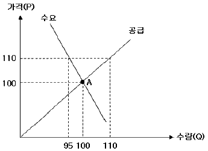
- 수요는 비탄력적이고 공급은 단위탄력적이다.
- 수요와 공급 모두 비탄력적이다.
- 수요는 탄력적이고 공급은 단위탄력적이다.
- 수요와 공급 모두 탄력적이다.
(정답률: 알수없음)
80. 농산물 가공에 관한 설명으로 옳지 않은 것은?
- 농산물의 부가가치를 증대시킨다.
- 수송, 저장 등의 물적 기능과 연관이 있다.
- 농산물의 형태효용을 창출한다.
- 유통마진의 증가로 총수요를 감소시킨다.
(정답률: 알수없음)
81. 신제품 도입 초기에 짧은 기간 동안 시장점유율을 높이기 위해 상대적으로 낮은 가격을 책정하여 총 시장수요를 자극하는 전략은?
- 탄력가격전략
- 명성가격전략
- 침투가격전략
- 단수가격전략
(정답률: 알수없음)
82. 농가에서 수확한 농산물을 창고에 보관한 후 방문한 수집상에게 판매하는 거래방식은?
- 산지공판
- 계약재배
- 정전거래
- 포전거래
(정답률: 알수없음)
83. 농산물 중계기구에 관한 설명으로 옳은 것은?
- 주로 도매시장의 형태로 나타난다.
- 농산물의 수집 및 반출기능을 수행한다.
- 농산물 산지를 중심으로 형성된다.
- 농산물을 최종소비자에게 분산하는 기능을 수행한다.
(정답률: 알수없음)
84. 농산물 유통 현황에 관한 설명으로 옳지 않은 것은?
- 대형할인점들이 농산물 산지직거래를 확대하고 있다.
- 백화점은 농산물 소매유통업체의 대형화를 선도하고 있다.
- 전체 농산물 유통에서 재래시장의 비중이 감소하고 있다.
- 할인점 시장이 포화단계에 접어들면서 슈퍼슈퍼마켓(SSM)이 증가하고 있다.
(정답률: 알수없음)
85. 영농조합법인이 사이버거래로 친환경복숭아를 음료회사에 판매한 경우 전자상거래의 유형은?
- B2C
- B2B
- C2C
- B2G
(정답률: 알수없음)
86. 촉진(promotion)의 기능으로 옳지 않은 것은?
- 제품에 대한 정보 제공
- 구매행동을 변화시키기 위한 설득
- 제품에 대한 기억의 상기
- 소비자의 관심을 끄는 신제품 개발
(정답률: 알수없음)
87. 농산물 유통정보에 관한 설명으로 옳지 않은 것은?
- 정보의 비대칭성을 감소시켜 불확실성에 따른 위험부담비용을 줄여준다.
- 유통정보의 적합성보다 신속성 및 다양성이 중요시 된다.
- 유통업자간에 경쟁을 유도하여 공정거래를 촉진한다.
- 시세 및 출하물량에 대한 정보 제공으로 출하처 선택에 도움을 준다.
(정답률: 알수없음)
88. 각각의 세분시장에 서로 다른 마케팅 믹스(marketing mix)를 적용하는 마케팅전략은?
- 차별적 마케팅(differentiated marketing)
- 무차별적 마케팅(undifferentiated marketing)
- 집중적 마케팅(concentrated marketing)
- 대중적 마케팅(mass marketing)
(정답률: 알수없음)
89. 일반 슈퍼마켓과 대형할인점의 중간 규모로 식품 위주의 상품구색을 갖추고 있는 소매유통업체는?
- 슈퍼센터(supercenter)
- 호울세일클럽(wholesale club)
- 카테고리킬러(category killer)
- 슈퍼슈퍼마켓(SSM)
(정답률: 알수없음)
90. 제품수명주기(PLC)상 제품의 매출성장률이 둔화되기 시작하고, 재구매 고객에 의한 구매가 판매의 대부분을 차지하는 시기는?
- 도입기
- 성장기
- 성숙기
- 쇠퇴기
(정답률: 알수없음)
91. 도매시장의 유통기능에 관한 설명으로 옳지 않은 것은?
- 농산물의 안전성 조사 및 품질인증
- 농산물의 가격형성 및 소유권 이전
- 농산물의 수급과 가격에 관한 정보 제공
- 농산물 판매대금의 정산 및 결제
(정답률: 알수없음)
92. 농산물 유통마진에 관한 설명으로 옳은 것은?
- 유통경로나 연도에 상관없이 일정하다.
- 엽근채류의 유통마진율은 곡류보다 낮은 편이다.
- 유통마진율과 마크업(mark-up)은 동일한 개념이다.
- 소매단계의 유통마진은 도매단계보다 높은 편이다.
(정답률: 90%)
93. 농산물 공동계산제에 관한 설명으로 옳지 않은 것은?
- 시장교섭력의 증대 및 규모의 경제를 실현할 수 있다.
- 개별 생산농가의 명의로 농산물을 출하한다.
- 엄격한 품질관리로 상품성을 높일 수 있다.
- 공동정산 주기에 따라 자금수요 충족에 일시적인 곤란이 생길 수도 있다.
(정답률: 91%)
94. 수요의 가격탄력성에 관한 설명으로 옳은 것은?
- 수요가 비탄력적인 경우 저가전략이 유리하다.
- 대체재가 많은 상품일수록 수요의 가격탄력성이 낮다.
- 수요가 탄력적일 경우 가격을 인하하면 총수익은 증가한다.
- 상품의 가격이 가계소득에서 차지하는 비중이 클수록 수요의 가격탄력성은 낮다.
(정답률: 알수없음)
95. 채소류의 포전거래가 성행하는 이유로 옳지 않은 것은?
- 채소농가가 위험선호적인 성향을 지니고 있다.
- 수확기에 많은 인력을 확보하기가 어렵다.
- 저장시설의 부족으로 수확물의 저장이 어렵다.
- 출하처, 출하방법 등에 대한 정보가 부족하다.
(정답률: 알수없음)
96. 어떤 농산물의 수요와 공급곡선이 다음과 같으며, 현재가격은 9이다. 
거미집모형에 의하면 이 농산물의 가격은 시간이 경과함에 따라 어떻게 되겠는가?
- 균형가격으로 수렴
- 균형가격으로부터 발산
- 일정한 폭으로 진동
- 현재가격에서 불변
(정답률: 알수없음)
97. 현물거래와 선물거래에 관한 설명으로 옳지 않은 것은?
- 선물가격은 미래의 현물가격에 대한 예시기능을 수행한다.
- 선물거래는 현물거래에 수반되는 가격변동위험을 선물시장에 전가한다.
- 현물거래와 선물거래는 서로 상이한 상품을 거래대상으로 한다.
- 현물가격과 선물가격의 차이를 베이시스(basis)라고 한다.
(정답률: 알수없음)
98. 킹(King)의 법칙과 가장 관련이 깊은 농산물의 특성은?
- 용도의 다양성
- 부패성
- 질과 양의 불균일성
- 수요와 공급의 비탄력성
(정답률: 알수없음)
99. 소수의 응답자들을 한 장소에 모이도록 한 다음 자유스러운 분위기 속에서 사회자가 제시하는 주제와 관련된 정보를 대화를 통해 수집하는 마케팅 조사법은?
- 델파이법
- 표적집단면접법
- 심층면접법
- 실험조사법
(정답률: 알수없음)
100. 우리나라 농산물 종합유통센터에 관한 설명으로 옳지 않은 것은?
- 농산물의 소포장, 가공 등의 기능을 수행하고 있다.
- 출하물량의 조달은 사전발주를 원칙으로 한다.
- 도매뿐만 아니라 소매기능도 수행하고 있다.
- 생산자단체가 소매업으로 진출하는 후방통합형이다.
(정답률: 알수없음)